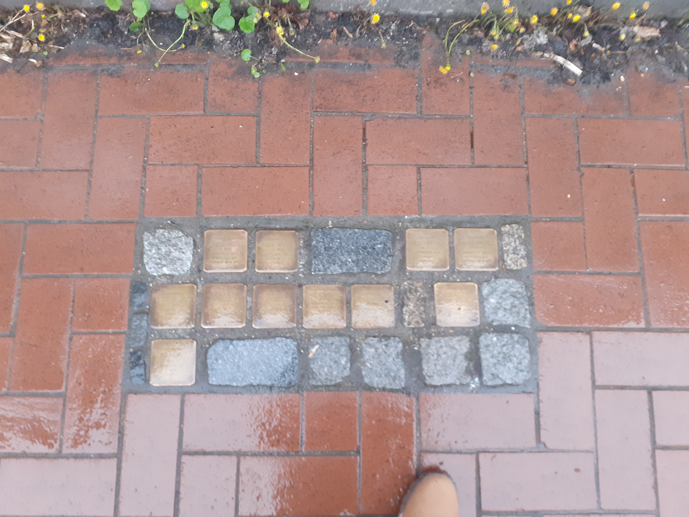
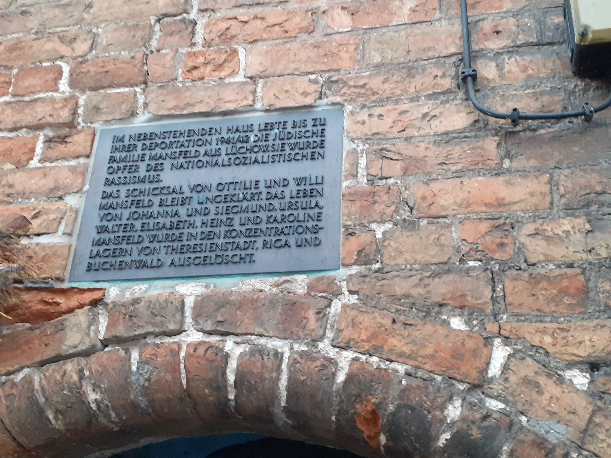
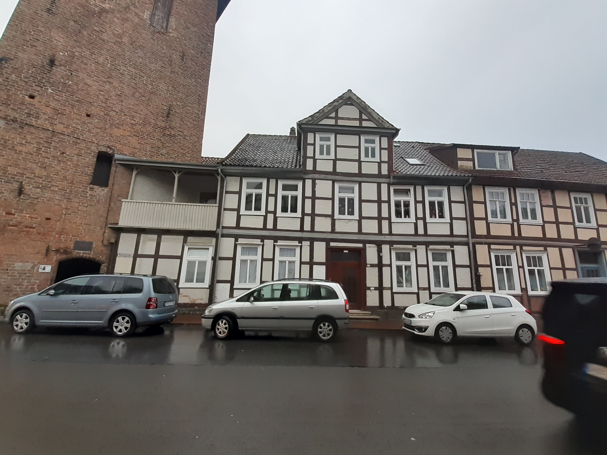

In diesem Bild sieht man die Stolpersteine der Familie Mansfeld. 10 Mitglieder dieser wurden 1941 und 1942 deportiert. Die meisten Starben in im KZ, nur Margerate Mansfeld Überlebte.

In diesem Bild Sieht man Eine Tafel ist am Glockenturm in der Theodor-Körner-Straße. Diese Gedenkt allen Opfern der Familie Mansfeld und klärt über das Schicksal der Familien Mitglieder auf.

In diesem Bild kann man das Wohnhaus sehen in denen die Familie Mansfeld lebte.
Wieso die Bilder ausgewählt worden sind: Das erste Bild wurde ausgewählt, aufgrund der nähe der Stolpersteine zur BBS Lüchow. Das zweite Bild wurde ausgewählt, weil die Tafel Informativ ist aber auch aufgrund dessen, dass die Informationen auf den Stolpersteinen nicht gut erkenntlich sind. Das dritte Bild wurde Ausgewählt um die Lage des letzten Wohnortes der Familie Mansfeld genauer zu visualisieren.